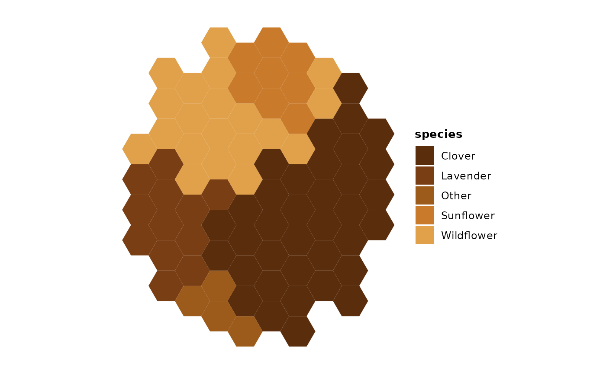
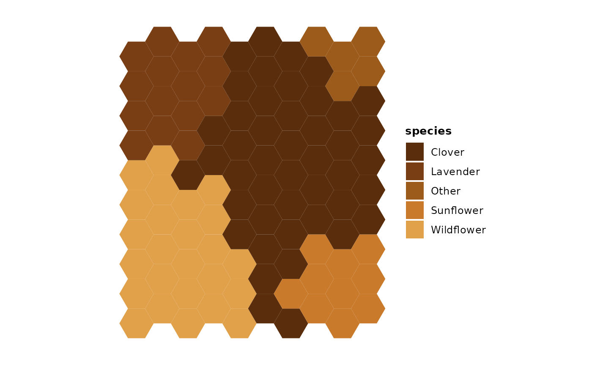
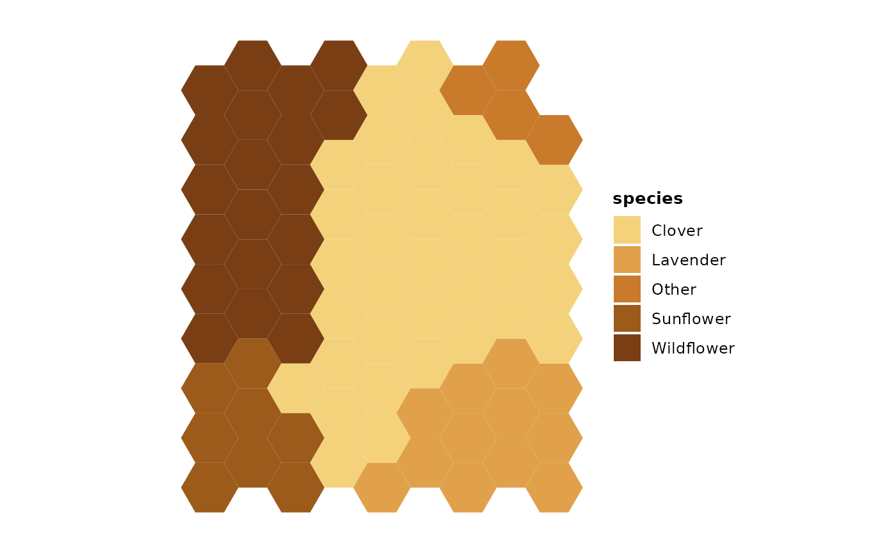
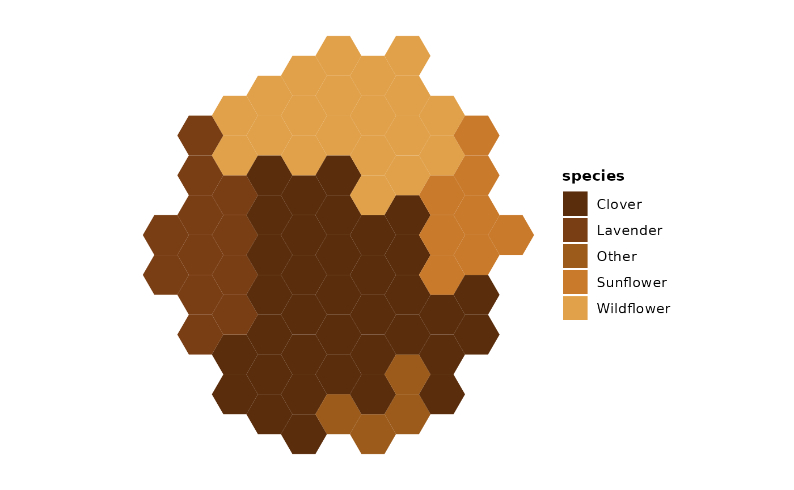
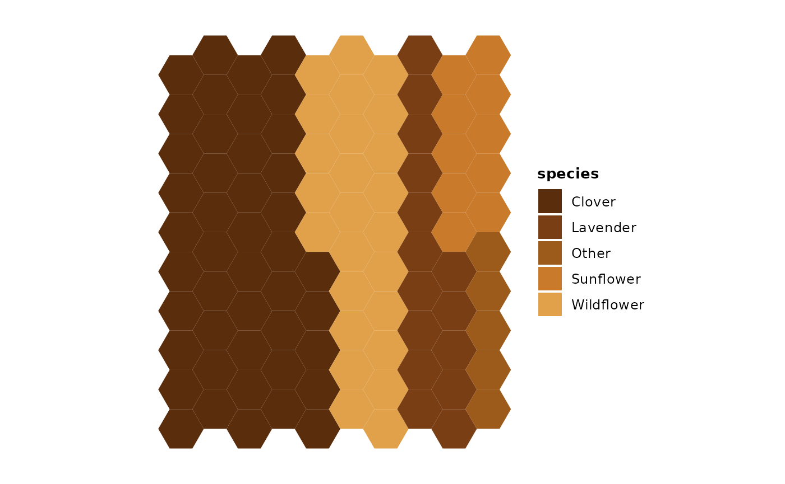
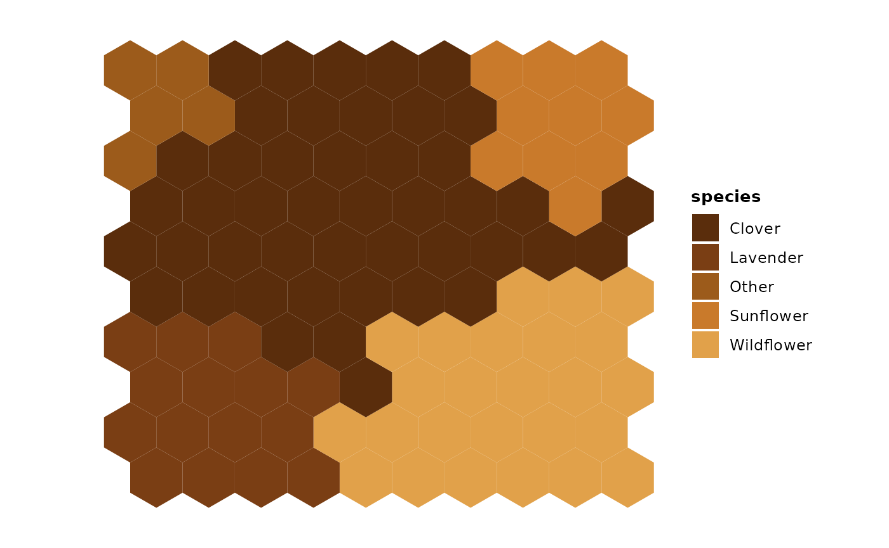
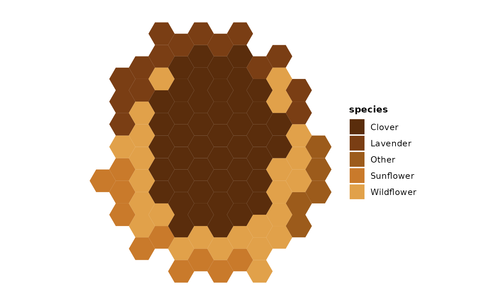

This vignette demonstrates how to create honeycomb plots with gghoneycomb.
Example: Pollen composition
The honeycomb layout is useful for showing proportional abundance of categories. In this example, we visualize the pollen composition of a honey sample.
pollen <- data.frame(
species = c("Clover", "Wildflower", "Lavender", "Sunflower", "Other"),
count = c(45, 25, 15, 10, 5)
)
ggplot(pollen, aes(fill = species, weight = count)) +
geom_honeycomb(n_cells = 80, silhouette = "rounded", layout = "free", seed = 1) +
scale_fill_honey() +
theme_honeycomb() +
coord_equal()
Choosing the number of cells
If you do not provide n_cells, gghoneycomb chooses a
value based on the number of categories and the smallest proportion. As
a rule of thumb, cell counts between 50 and 500 tend to work well for
most plots; higher values increase detail but can make small regions
harder to see.
ggplot(pollen, aes(fill = species, weight = count)) +
geom_honeycomb(silhouette = "rect") +
scale_fill_honey() +
theme_honeycomb() +
coord_equal()
Using proportions explicitly
If you already have proportions, set
values_are = "proportions" and pass the values via the
weight aesthetic.
pollen_prop <- data.frame(
species = c("Clover", "Wildflower", "Lavender", "Sunflower", "Other"),
prop = c(0.45, 0.25, 0.15, 0.10, 0.05)
)
ggplot(pollen_prop, aes(fill = species, weight = prop)) +
geom_honeycomb(values_are = "proportions", n_cells = 80, seed = 1) +
scale_fill_honey(direction = -1) +
theme_honeycomb() +
coord_equal()
Controlling the silhouette
The silhouette parameter controls the overall shape of
the honeycomb:
-
"rect"(default): a clean rectangular grid. -
"rounded": softened corners for a more organic feel. -
"organic": irregular boundary grown from a central seed.
Pair silhouette with layout = "free" and
temperature to fine-tune the amount of jitter in the
layout.
ggplot(pollen, aes(fill = species, weight = count)) +
geom_honeycomb(n_cells = 80, silhouette = "organic",
layout = "free", temperature = 0.35, seed = 42) +
scale_fill_honey() +
theme_honeycomb() +
coord_equal()
Blocky compact style
compact_style = "blocky" carves rectangular blocks
instead of minimizing perimeter. It requires
silhouette = "rect" and produces a treemap-like appearance
where each category occupies a roughly rectangular region.
ggplot(pollen, aes(fill = species, weight = count)) +
geom_honeycomb(
n_cells = 100,
silhouette = "rect",
layout = "compact",
compact_style = "blocky"
) +
scale_fill_honey() +
theme_honeycomb() +
coord_equal()
Rotation
The rotation parameter rotates the rendered honeycomb in
90-degree increments (0, 90, 180, 270). Rotation is a coordinate
transform applied after allocation, so the category regions and their
contiguity are unchanged. Use it to switch between portrait and
landscape orientations.
ggplot(pollen, aes(fill = species, weight = count)) +
geom_honeycomb(
n_cells = 100,
silhouette = "rect",
rotation = 90,
seed = 1
) +
scale_fill_honey() +
theme_honeycomb() +
coord_equal()
High temperature
In layout = "free" mode, temperature
controls how loosely the allocator samples candidate cells. The default
is 0.35. Higher values (e.g., 0.8) widen the frontier and invert scoring
preferences, producing more irregular, less compact category regions.
Per-category contiguity is still guaranteed regardless of
temperature.
ggplot(pollen, aes(fill = species, weight = count)) +
geom_honeycomb(
n_cells = 100,
silhouette = "organic",
layout = "free",
temperature = 0.8,
seed = 7
) +
scale_fill_honey() +
theme_honeycomb() +
coord_equal()